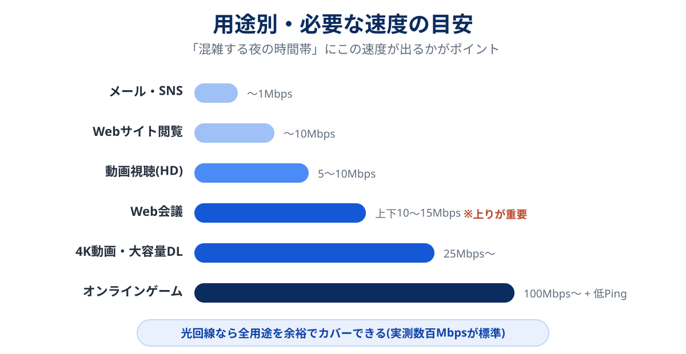

「あ、〇〇さん固まってます」「すみません、聞こえてなかったです」——Web会議のこのやりとり、当事者になるとかなりのストレスですし、商談や面接なら実害も出ます。
この記事では、会議中にすぐできる応急処置と、二度と起こさないための切り分け→根本対策を分けて解説します。犯人は「回線」「Wi-Fi」「PC」の3層のどれかにいます。
先に結論
いま会議中なら:カメラをオフ → 他のアプリを閉じる → ダメならスマホのテザリングに切り替え。
再発防止なら:速度測定と有線接続テストで犯人を特定してから対策を。有線でも遅い→回線の問題(乗り換え検討)、有線なら速い→Wi-Fi(ルーター)の問題です。
📋 この記事でわかること
【会議中】30秒でできる応急処置
効果の大きい順です。上から試してください。
- 自分のカメラをオフにする:映像は音声の何倍も帯域を食います。音声さえ通れば会議は成立します
- 他のアプリ・ブラウザのタブを閉じる:クラウド同期(OneDrive等)や動画タブが裏で帯域を奪っていることは多いです
- 家族の動画・ゲームを一時停止してもらう:同じWi-Fiの帯域は取り合いです
- スマホのテザリングに切り替える:自宅回線と携帯回線は別物なので、切り替えれば大抵復活します。「いざという時はテザリング」を覚えておくだけで心の余裕が違います
そもそもWeb会議に必要な速度は?

HD画質の会議で上下10〜15Mbpsあれば十分です。つまり「平均では足りているのに途切れる」=瞬間的な低下や不安定さが犯人ということ。そしてもう1つ重要なのが、自分の声と映像を送る上り(アップロード)。下りは速いのに上りが細い環境(集合住宅のVDSLやモバイル回線)では、「相手の声は聞こえるのに、自分の声だけ途切れて聞こえている」現象が起きます。
【会議後】5分でできる犯人の切り分け
-
会議する時間帯に速度を測る
Speedtest等で下り・上り・Pingを記録。上下10Mbps未満やPing 50ms超が頻発するなら回線層が怪しいです。昼と夜で差が大きい場合は混雑の影響。
-
LANケーブルで直結して再測定
有線で速い→Wi-Fi(ルーター)が犯人。有線でも遅い→回線が犯人。この1手で対策の方向が確定します。ノートPCにLANポートがなければUSB-LANアダプタ(1,000円台)で。
-
別のデバイスでも試す
スマホでは快適なのにPCだけ遅いなら、PC側(常駐アプリ・古い無線規格・セキュリティソフト)の問題の可能性が高いです。
原因別の根本対策
犯人が「Wi-Fi」だった場合(有線なら速い)
- ルーターの置き場所を変える:床置き・棚の奥・水槽や電子レンジの近くはNG。部屋の高くて開けた場所へ
- 5GHz帯に接続する:SSID末尾が「-5G」「-A」等のほう。2.4GHz帯は干渉だらけです
- 5年以上前のルーターは買い替え:Wi-Fi 6対応機で数千円〜。体感が変わります
- 仕事部屋が遠いなら中継機かメッシュWi-Fiを検討
犯人が「回線」だった場合(有線でも遅い)
- IPv6(IPoE)接続に切り替える:契約中の回線が対応していれば無料。夜の混雑に効きます
- マンションで夜だけ遅いなら配線方式を確認:VDSL方式なら構造的な問題です。マンション回線の記事で確認方法から解説しています
- モバイルWi-Fi・無料ネットで仕事をしているなら、光回線への切り替えが根本解決:Web会議が生命線の働き方なら、ここはケチらない方が精神衛生上も安い買い物です
犯人が「PC」だった場合(このPCだけ遅い)
- 会議前に再起動し、不要な常駐アプリを止める
- クラウド同期(OneDrive・Googleドライブ等)を会議中は一時停止
- ブラウザ版ではなくアプリ版の会議ツールを使う(負荷が軽いことが多い)
私の場合、犯人は「VDSLマンション×夜の会議」でした。応急処置で数ヶ月しのいだ末に回線を替えたら、悩みごと消滅。もっと早く切り分けておけば、毎回の「聞こえますか?」に費やした時間は返ってきたなと思います。
運営者・もりそん
よくある質問
Web会議に必要な速度は?
HD画質なら上下10〜15Mbpsで安定します。ポイントは会議の時間帯に「安定して」出ているか。特に上り(アップロード)が相手への聞こえ方を決めます。
会議中に固まったら、まず何をすべき?
カメラオフが最速・最効果です。それでもダメなら他アプリを閉じ、最後はテザリングへ切り替え。この3段構えを覚えておけば会議は乗り切れます。
ルーターと回線、どちらを先に見直すべき?
LANケーブル直結テストの結果次第です。有線で速ければルーター(数千円〜)、有線でも遅ければ回線(乗り換え)。テストせずに買い替えると、私のようにお金を無駄にします。
まとめ:切り分けてから、お金と時間を使う
- 会議中はカメラオフ→アプリ整理→テザリングの3段構え
- 再発防止は「時間帯別の実測」と「有線テスト」で犯人特定から
- Wi-Fiが犯人ならルーター対策(数千円)、回線が犯人なら乗り換えが根本解決
- マンションで夜だけ遅いなら配線方式の確認を最優先で
📚 参考情報・データの出典
- Zoom・Microsoft Teams・Google Meet 公式ヘルプの推奨帯域
- 運営者自身のVDSL環境での実測・改善の経験